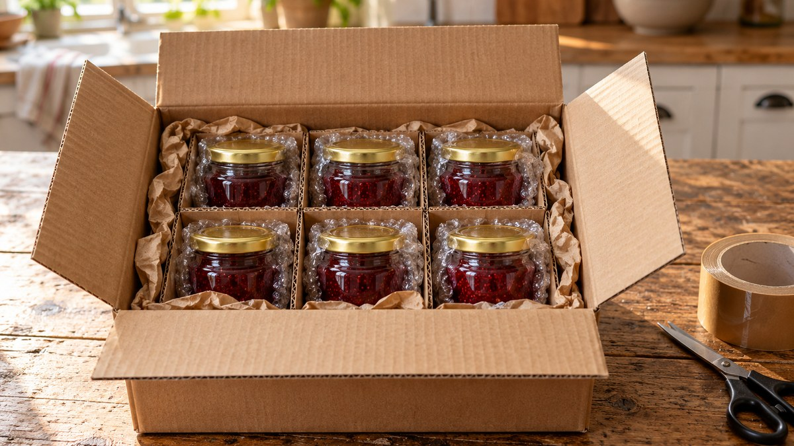

Como embalar potes de vidro para enviar sem quebrar

Pote de vidro viaja bem quando cada pote tem o seu espaço. O que costuma quebrar quase nunca é o vidro sozinho: é pote encostando em pote, caixa com folga ou caixa velha que cede no meio do caminho. O passo a passo abaixo junta o que o Mercado Livre, os Correios e o Melhor Envio recomendam, e vale para geleia, mel, doce e qualquer pote que você vá despachar.
O que as três fontes têm em comum
As orientações do Mercado Livre, do guia de embalagens dos Correios e do blog do Melhor Envio partem da mesma ideia: proteger cada item sozinho, colocar tudo numa caixa resistente e não deixar nada se mexer lá dentro.
O Mercado Livre pede, para vidro, que cada produto seja embalado separadamente, com pelo menos três voltas de plástico-filme ou plástico-bolha, com separadores de papelão na caixa e a etiqueta "VIDRO" no pacote. Os Correios pedem para embrulhar cada item, preencher os vazios entre os itens e entre as paredes da caixa e fechar bem com fita. O Melhor Envio soma a isso a caixa nova e o teste da sacudida.
As regras de cada plataforma mudam com o tempo e valem para quem vende nela. Antes de despachar, confira a da sua.
Passo a passo
- Escolha uma caixa nova e resistente. Papelão duplo ou reforçado. Caixa amassada ou reaproveitada já perdeu parte da resistência.
- Embrulhe cada pote sozinho. Pelo menos três voltas de plástico-bolha ou plástico-filme, cobrindo a tampa também.
- Separe os potes com divisórias de papelão. Um pote não pode tocar o outro, nem a parede da caixa.
- Preencha todos os vazios. Papel amassado, isopor ou almofadas de ar nas laterais, no fundo e em cima, para o conjunto não se mexer.
- Faça o teste da sacudida. Antes de fechar, segure a caixa, incline e chacoalhe de leve. Se sentir folga ou ouvir ruído, reforce o enchimento.
- Feche com fita larga e identifique. Fita em "H" em cima e embaixo da caixa, e a etiqueta "VIDRO" bem visível quando a plataforma pedir.
Quanto mais pesado o item, mais grossa precisa ser a camada de proteção. Um pote de 500 ml cheio pede mais cuidado do que um de 40 ml.
Pense no peso do pote cheio
O inventário da PodEmbalar mostra o peso do pote vazio: o Pote Geleinha 40 ml mede 42,5 mm de diâmetro por 50 mm de altura e pesa 50 g; o Pote Conserva 500 ml mede 80 mm de diâmetro por 130 mm de altura e pesa 260 g. O peso final depende do que vai dentro e de quanta proteção você coloca em volta. Por isso, pese a caixa pronta antes de despachar, em vez de calcular de cabeça.
Potes com mel ou conteúdo que escorre
Quando o conteúdo escorre, como o mel, o vazamento é um segundo risco além da quebra. Para líquidos, o Mercado Livre pede fita adesiva plástica sobre a tampa e pelo menos duas voltas de plástico-bolha sem deixar nenhuma parte exposta, com divisórias de papelão entre os itens. O passo a passo completo está em como embalar mel pra não vazar no transporte.
Vale contratar seguro?
O Melhor Envio recomenda seguro para produto frágil, para ter cobertura em caso de dano ou extravio. Nenhuma embalagem garante que nada vai acontecer, e a decisão é sua: compare o custo do seguro com o valor do que está dentro da caixa.
Checklist antes de despachar
- Caixa nova, sem amassado.
- Cada pote embrulhado sozinho, com tampa protegida.
- Divisórias de papelão entre os potes.
- Nenhum vazio na caixa, e o teste da sacudida feito.
- Fita larga em "H" e etiqueta "VIDRO", se a plataforma pedir.
- Caixa pronta pesada.
Se você ainda está escolhendo o pote
Potes do mesmo tamanho facilitam o encaixe das divisórias e do enchimento, e simplificam a conta de caixa quando o pedido cresce. Se está começando, veja também como escolher o tamanho do pote de vidro pelo que você vai vender.
Quer conhecer os potes? Veja a Geleinha 40 ml no site ou fale com a gente pelo WhatsApp para tirar dúvidas.
Mercado Livre: Instruções para embalar cada tipo de produto,
Correios: Embalagens recomendadas pelos Correios (guia técnico RPC, versão 1.1),
Melhor Envio: Produto frágil, como embalar e enviar com segurança (publicado em 20/05/2025).
Medidas e peso dos potes: Catálogo PodEmbalar 2026.